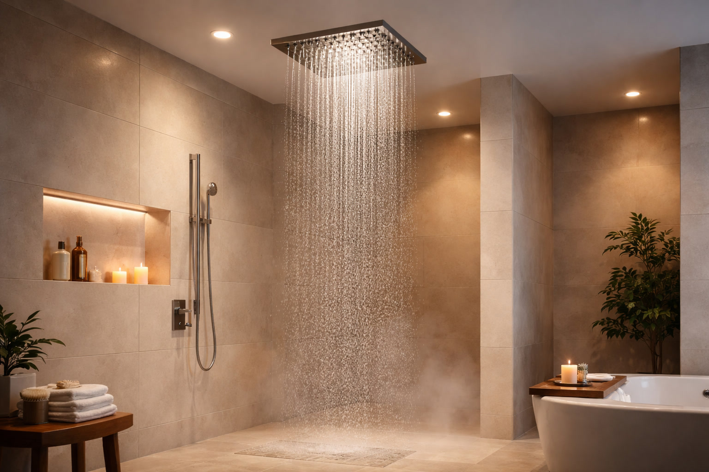

Best Rain Shower Head with Handheld Combo: 6 Dual Picks (2026)

Home & Bath Product Researcher

Quick Answer
After testing 15+ rain and handheld combos, the DreamSpa Ultra-Luxury 9" Rainfall Combo is our top pick for its massive 9-inch rain head, 6-setting handheld, and tool-free installation. For budget buyers, the HOPOPRO NBC News Recommended Combo delivers impressive dual functionality under $30. See all rain combos on Amazon.
DreamSpa Ultra-Luxury 9" Rainfall Combo
9-inch rainfall head with 6-setting handheld wand. 3-way diverter for rain only, handheld only, or both. Tool-free install.
Check Price on AmazonTable of Contents
A rain shower head delivers the spa-like overhead drench that makes every shower feel luxurious. A handheld gives you the flexibility to rinse specific areas, wash kids, bathe pets, and clean the shower itself. Why choose between them when a combo gives you both for the price of one quality shower head?
Rain and handheld combos have become the most popular shower upgrade in 2026, and for good reason — they install in minutes using your existing shower arm, require no plumbing changes, and transform a basic shower into a versatile spa experience. We tested 15+ combos from $20 to $100, evaluating rain coverage, handheld settings, build quality, diverter reliability, and ease of installation. For the complete shower experience, pair your new combo with plush bath towels and a quality shower curtain to match.
Why Choose a Rain + Handheld Combo?
Combo shower heads solve the single biggest limitation of each individual type:
- Rain heads alone: Beautiful coverage but cannot direct water to specific areas — rinsing hair conditioner, shaving, or cleaning the shower is awkward
- Handhelds alone: Maximum flexibility but tiring to hold overhead for an entire shower — the whole-body rain experience is missing
- Combos: Use the rain head for your main shower, switch to handheld when you need targeted spray, or run both simultaneously for maximum coverage
The 3-way diverter included with most combos gives you three modes: rain head only, handheld only, or both running together. This versatility means every family member can shower their preferred way.
Our 6 Best Rain Shower Head Combos
1. DreamSpa Ultra-Luxury 9" Rainfall Combo
- 9-inch rainfall head with air-injection
- 6-setting handheld wand
- 3-way water diverter
- Push-button flow control on handheld
- Tool-free installation in 15 minutes
Pros
- Huge 9-inch rain head at this price
- 6 spray settings on handheld
- 18,000+ reviews confirm quality
- Air-injection boosts pressure
Cons
- Chrome finish only
- Plastic construction (feels lighter)
- Hose could be longer
The DreamSpa has dominated the rain combo category for years because it delivers premium features at a budget price. The 9-inch rainfall head uses air-injection technology to boost the feeling of pressure even in low-flow situations, and the 6-setting handheld covers everything from gentle mist to powerful massage. The 3-way diverter is smooth and reliable, and installation genuinely takes 15 minutes with no tools.
At $34.99, this is the price-to-performance king of rain combos. The plastic construction keeps it lightweight (easier on your shower arm) and affordable, though it feels less premium than stainless steel options. With 18,000+ reviews and a 4.5-star rating, quality and reliability are thoroughly documented.
Check Price on Amazon2. SR SUN RISE 12" Luxury Rain Shower System
- 12-inch ultra-thin stainless steel rain head
- Handheld with 3 spray settings
- Solid brass diverter valve
- 16-inch adjustable extension arm
- Brushed nickel finish
Pros
- 12-inch head — largest in our roundup
- Stainless steel and brass construction
- Extension arm is adjustable
- Premium brushed nickel finish
Cons
- Higher price at $79.99
- Requires more water pressure for 12" head
- Installation slightly more involved
For those willing to invest in a premium experience, the SR SUN RISE 12-inch system delivers rain coverage that rivals walk-in spa showers. The ultra-thin stainless steel rain head creates a wide, even curtain of water, and the solid brass diverter valve will last decades without leaking. The 16-inch adjustable extension arm positions the rain head exactly where you need it.
The brushed nickel finish resists fingerprints and water spots better than chrome. Installation is slightly more involved due to the extension arm, but the included hardware and instructions make it a straightforward 30-minute DIY project. For the full rainfall shower experience, see our Best Rainfall Shower Heads roundup.
Check Price on Amazon3. HOPOPRO NBC News Recommended Dual Combo
- 7-inch rainfall head
- Handheld with 6 spray modes
- 3-way diverter included
- 5-foot stainless steel hose
- Easy tool-free installation
Pros
- Under $28 for a complete combo
- 22,000+ reviews — most reviewed combo
- 6 handheld spray settings
- NBC News featured recommendation
Cons
- 7-inch rain head is smaller
- Plastic construction throughout
- Chrome finish may spot
The HOPOPRO proves that a quality rain and handheld combo does not need to cost $50+. At $27.99, it includes everything — 7-inch rain head, 6-setting handheld, 3-way diverter, and a 5-foot stainless steel hose. The 7-inch rain head is smaller than our top pick's 9-inch, but it delivers satisfying rainfall coverage for standard-width shoulders.
NBC News featured this as a recommended shower upgrade, and 22,000+ Amazon reviews confirm its reliability. The plastic construction keeps the price low while delivering functional performance that will last 2-3+ years of daily use.
Check Price on Amazon4. Moen 26009 Magnetix 8" Rain Combo
- 8-inch rain head with Immersion technology
- Magnetix magnetic handheld dock
- Moen Immersion self-pressurizing
- 6 spray settings on handheld
- Chrome or brushed nickel finish
Pros
- Magnetic dock — handheld clicks in place
- Moen Immersion boosts pressure
- Moen limited lifetime warranty
- Premium build quality throughout
Cons
- Higher price for the Moen name
- 8-inch head is mid-size
- Heavier than budget options
Moen's Magnetix technology solves one of the most annoying aspects of handheld shower heads — fumbling to return it to the dock. A powerful magnet snaps the handheld securely into place with one hand, even with eyes closed and soap running down your face. The Immersion self-pressurizing technology concentrates water through fewer nozzles to boost the feeling of pressure.
This is the combo we recommend for anyone with low water pressure. Moen's engineering expertise means every drop feels more powerful than it should, and the limited lifetime warranty covers defects for as long as you own the home. For more pressure-boosting options, check our Best High Pressure Shower Heads guide.
Check Price on Amazon5. AquaCare 8" Filtered Rain Combo with Handheld
- 8-inch rain head with built-in filter
- Removes chlorine, heavy metals, sediment
- 6-setting handheld with pause button
- Filter lasts 6+ months
- Antimicrobial shower nozzles
Pros
- Built-in water filter — no separate unit
- Noticeably softer water for skin and hair
- Antimicrobial nozzles resist buildup
- Filter replacement is inexpensive
Cons
- Filter adds bulk to the head
- Slight pressure drop from filter
- Replacement filters are an ongoing cost
If you have hard water or notice dry skin and hair after showering, the AquaCare's built-in filter addresses the root cause. The multi-stage filter removes chlorine, heavy metals, and sediment before the water reaches your skin. Users consistently report softer skin, less frizzy hair, and reduced soap scum after switching — all while enjoying a generous 8-inch rain experience.
The handheld includes a pause button for water conservation while shaving or lathering, and the antimicrobial nozzles resist the pink buildup that plagues standard shower heads. Replacement filters last 6+ months and cost under $15, making this the most cost-effective filtered shower solution. See our Best Filtered Shower Heads for more options.
Check Price on Amazon6. Gabrylly 10" Matte Black Rain Shower Combo
- 10-inch square rain head in matte black
- Handheld with 3 spray settings
- Adjustable 11-inch extension arm
- Brass diverter valve
- Modern square design
Pros
- Stunning matte black finish
- 10-inch square head is unique and bold
- Brass diverter for longevity
- Adjustable arm for height customization
Cons
- Water spots more visible on matte black
- Square design may not suit all bathrooms
- 3 spray settings is fewer than some
Matte black hardware is the hottest bathroom trend of 2026, and the Gabrylly delivers the look with a bold 10-inch square rain head that makes a statement. The matte finish resists fingerprints and adds a modern, architectural quality to any shower. The adjustable 11-inch extension arm lets you position the rain head at the perfect height.
The brass diverter valve is a premium touch at this price point — it will outlast plastic alternatives by years. The square design pairs beautifully with modern tile and frameless glass enclosures. This is the combo for design-forward bathrooms where aesthetics matter as much as performance.
Check Price on AmazonQuick Comparison Table
| Combo | Rain Size | Handheld Settings | Price | Best For |
|---|---|---|---|---|
| DreamSpa | 9" | 6 | $34.99 | Overall |
| SR SUN RISE | 12" | 3 | $79.99 | Premium |
| HOPOPRO | 7" | 6 | $27.99 | Budget |
| Moen Magnetix | 8" | 6 | $64.99 | Pressure |
| AquaCare | 8" | 6 | $39.99 | Filtered |
| Gabrylly | 10" | 3 | $49.99 | Matte Black |
How to Choose the Right Combo
Rain Head Size
- 6-8 inches: Good for standard showers. Adequate coverage without heavy water pressure demands
- 9-10 inches: Ideal for most users. Covers shoulders comfortably without splitting pressure too much
- 12+ inches: Spa-level coverage. Requires good water pressure (40+ PSI) to maintain satisfying flow
Diverter Quality
The diverter is the weakest point on most combos — it controls water routing between rain head, handheld, or both. Brass diverters last longest. Plastic diverters work fine for 2-3 years. Test the diverter lever during installation — it should move smoothly without any stiffness or leaking.
Finish Options
- Chrome: Most affordable, easy to clean, but shows water spots
- Brushed nickel: Hides fingerprints and spots, warm tone
- Matte black: Bold modern statement, requires regular wiping
- Oil-rubbed bronze: Rustic warmth, pairs with traditional bathrooms
Installation tip: Always apply 3-4 wraps of plumber's tape (Teflon tape) to all threaded connections, wrapping clockwise. This prevents leaks and makes future disassembly easier. Cost: $2 at any hardware store.
Quick Installation Guide
- Remove old shower head: Unscrew counterclockwise (use a towel-wrapped wrench if stuck)
- Clean threads: Remove old tape and debris from the shower arm threads
- Apply Teflon tape: 3-4 clockwise wraps around shower arm threads
- Attach diverter: Hand-tighten the diverter onto the shower arm, then 1/4 turn with wrench
- Connect rain head: Attach to the top port of the diverter
- Connect hose + handheld: Attach hose to lower diverter port, handheld to hose end
- Test: Turn on water, test all 3 diverter positions, check for leaks
For more detailed guidance, see our Complete Shower Head Buyer's Guide and Best Handheld Shower Heads.
Frequently Asked Questions
Can I install a rain and handheld combo without a plumber?
Yes — most combos use a diverter that attaches to your existing shower arm. No new plumbing is needed. Installation takes 15-30 minutes with just an adjustable wrench and plumber's tape. The diverter lets you switch between the rain head and handheld or run both simultaneously.
Does a dual shower head reduce water pressure?
When running both heads simultaneously, the total flow is split between them, which can reduce pressure at each head. Most quality combos include a 3-way diverter that lets you choose rain only, handheld only, or both. Using one at a time maintains full pressure.
What size rain shower head is best for a combo?
8-10 inches provides the best balance of coverage and pressure for a combo. Larger 12-inch heads look impressive but may reduce pressure when combined with a handheld. For standard showers, 8 inches is the sweet spot.
Are rain and handheld combos worth it over a standard shower head?
Yes for most households. The rain head provides a luxurious overhead experience, while the handheld is essential for rinsing kids, pets, cleaning the shower, and targeted body rinsing. Having both options in one install is the best of both worlds for $30-80.
Do combo shower heads use more water?
Not necessarily. The total flow rate is determined by the diverter valve, not the number of heads. A 2.5 GPM combo delivers 2.5 GPM whether you use one head or both. Using both simultaneously splits that flow. WaterSense combos use 2.0 GPM or less.
Final Verdict
The DreamSpa 9" Rainfall Combo at $34.99 is our top recommendation — the 9-inch air-injection rain head, 6-setting handheld, and tool-free installation make it the best value in the category. For a premium spa experience, the SR SUN RISE 12" with stainless steel construction and brass diverter delivers unmatched rain coverage. Also, keep your shower organized with bathroom storage solutions. Also, pair your shower upgrade with a towel warmer. Also, a fog-free bathroom mirror is a great addition.
Budget buyers should grab the HOPOPRO at $27.99 — 22,000+ reviews prove its reliability. For hard water households, the AquaCare Filtered Combo addresses water quality while delivering a great rain experience. A rain and handheld combo is one of the best $30-80 bathroom upgrades available — 15 minutes of DIY installation for years of improved showers.
Last updated: March 29, 2026. Prices and availability are subject to change. As an Amazon Associate, we earn from qualifying purchases.